Inclusive Medical
Innovation is
Advocacy Led
Innovation is
Advocacy Led
Advocacy illuminates the voice of
underserved patient communities
underserved patient communities

When research listens, progress follows.
We connect patients with clinical trials to make
research more equitable and efficient with patient advocacy at the forefront.
Patients are the experts in their condition and advocacy groups provide a platform for patient voices.
Working directly with these communities is the key to pushing research forward in an inclusive way.
Advocacy Partners are health influencers
Patient Stories are the Heart
of our work
Whether you’re a patient, a caregiver, a family member, a healthcare worker, a community leader, or someone else who cares...
Advocacy works best when we connect everyone’s voice.
Advocacy works best when we connect everyone’s voice.
Each patient story inspires better research. Add yours to join the cause.
Advocacy works best when we include every patient’s voice
A few of my medical procedures lacked any follow up post-surgery. Nobody seemed to prioritize whether the objectives of surgery were actually met.
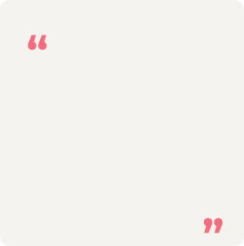
I learned to advocate for my Mother’s illness by keeping a journal on me at all times. Sometimes it’d be hard to anticipate when we’d be able to speak with a specialist, so I always had my notes in front of me to be able to share the most important information when needed
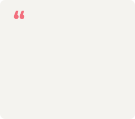
I had to create an advocacy group to find other rare disease patients with my condition. I suffered through mental health and physical challenges, and I was desperate to find a way to connect with others going through similar struggles
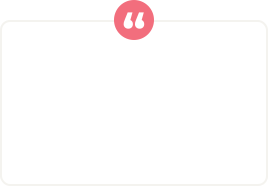
It took me over 12 months to be able to get in front of the right specialists to obtain my Thyroid Eye Disease diagnosis and it has left me ineligble for top clinical trial options
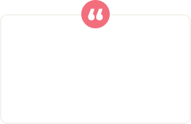
I haven’t been able to talk as much or walk as far since recovering from COVID-19. I’ve also experienced completely new issues with mental health
Living with Chronic Pain has involved seeing six specialists and the fear of being undertreated by some and overtreated by others. I’ve tried to make my appearance look worse at doctors visits to mitigate the risk of not being heard about my pain.
The patient voice has led to saving 60+ years of research via Leapcure
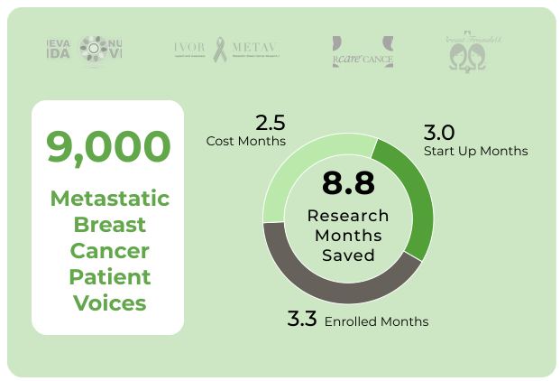
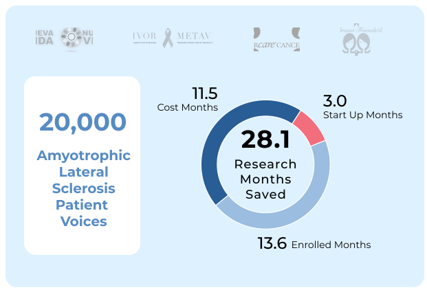
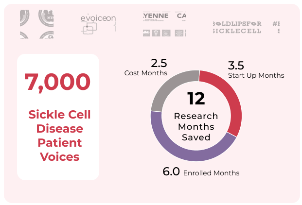
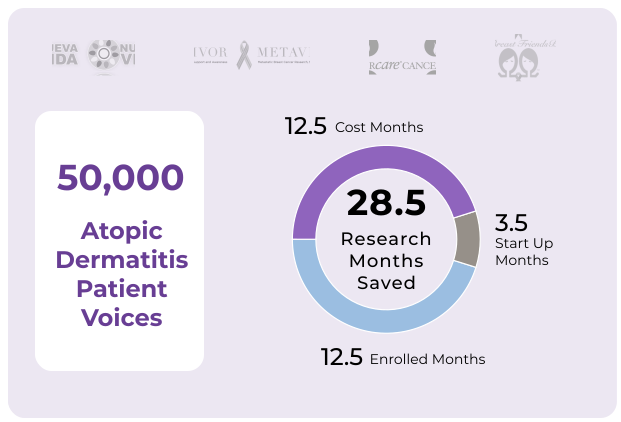
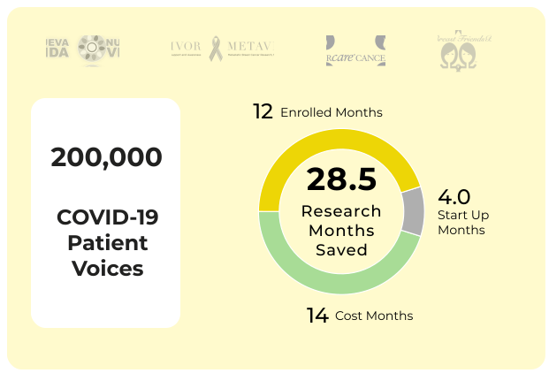
We support studies in over 30 languages and across 42 countries
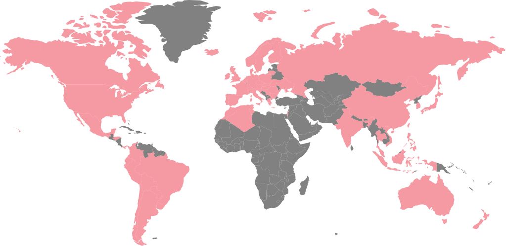
We’d love to hear from you
Have an inquiry or want to learn more? Leave a message and let us know which indications we can help with